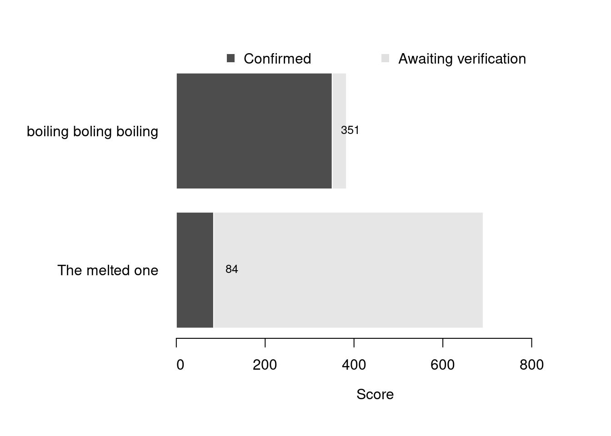

Content
You can view all the wildlife recorded at this event on iNaturalist.


| Records | 30 |
| Species | 28 |
| Verified species | 20 |
| Observers | 4 |
| Potential score | 1,073 |
| Confirmed score | 655 |
| Top verified species | Trypanosyllis |
| Top species rarity score | 200 |
| Registered participants | 7 |
| Children attending | 0 |
Congratulations to boiling boling boiling for taking the gold medal in this BioBlitz Battle! And well done to everyone for a great game and some fantastic wildlife finds.
| Team | Records | Potential Score | Confirmed Score |
|---|---|---|---|
| boiling boling boiling | 14 | 383 | 351 |
| The melted one | 14 | 691 | 84 |

| Participant | Records | Potential Score | Confirmed Score |
|---|---|---|---|
| Nathan Jackson | 3 | 261 | 261 |
| gwenelis | 11 | 122 | 90 |
| David Lyu | 14 | 691 | 84 |
A total of 5 species have a verified rarity score of 43 or higher.


Community verified records only
Click any image to view the taxon on iNaturalist.
| Name | Rarity Score | |
|---|---|---|

|
Trypanosyllis | 200 |

|
Tubulipora | 81 |

|
Amathia | 72 |

|
Oscarella nicolae | 44 |

|
Three-coloured Aeolis - Eubranchus tricolor | 43 |

|
Tubulariidae | 35 |

|
Colonial Seasquirt - Morchellium argus | 24 |

|
Hairy Spiny Dorid - Acanthodoris pilosa | 21 |

|
Lightbulb Sea Squirt - Clavelina lepadiformis | 19 |

|
Sap-sucking Slug - Elysia viridis | 18 |

|
European cowrie - Trivia monacha | 17 |

|
Star Tunicate - Botryllus schlosseri | 12 |

|
Common Brittle Star - Ophiothrix fragilis | 11 |

|
Common Sea Star - Asterias rubens | 9 |

|
True Oysters - Ostreidae | 9 |

|
Common Hermit Crab - Pagurus bernhardus | 9 |

|
Edible Crab - Cancer pagurus | 8 |

|
bladder wrack - Fucus vesiculosus | 8 |

|
Shanny - Lipophrys pholis | 8 |

|
European Green Crab - Carcinus maenas | 7 |